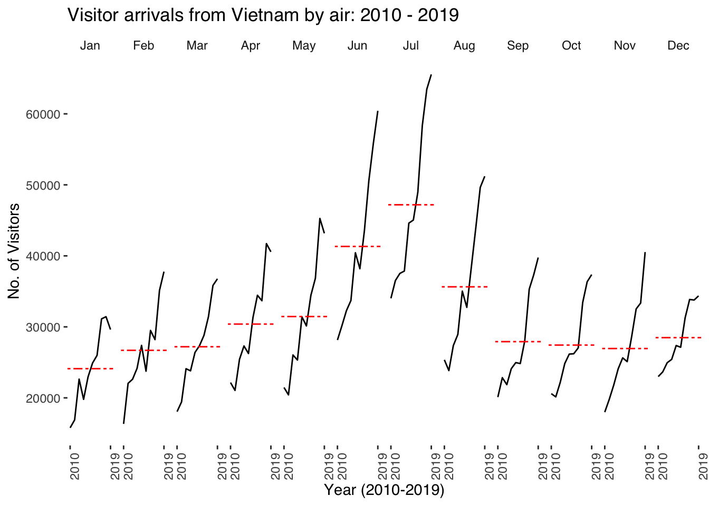

pacman::p_load(tidyverse, kable, lubridate, data.table, ggthemes, readxl, CGPfunctions, ggHoriPlot, ggTimeSeries) Time Series Analysis
1. Learning Objectives
Characteristics of time-series data
Time-series patterns
Time-series data visualization methods
- Line graph
- Control chart
- Slopegraph
- Cycle plot
- Horizon graph
- Sunburst diagram
- Calendar Heatmap
- Stream Graph
Interactive techniques for time-series data visualisation
Animation techniques for time-series visualisation
2. Characteristics of Time-series Data
Time series analysis is a statistical technique that deals with time series data, or data that is observed sequentially over time. It involves analyzing the data to extract meaningful statistics and characteristics, and to model the underlying processes generating the sequence. The goal is often to make forecasts about future points in the series based on the information contained in the historical data. The data often contains the following characteristics:
Temporal Dependency: Time series data points are dependent on time, meaning that observations are correlated with adjacent observations. The value at a specific time point may be influenced by the values at previous time points.
Seasonality: Many time series exhibit seasonal patterns, meaning there are cycles of behavior that repeat over known, fixed periods. For example, retail sales may increase during the holiday season every year.
Trend: Time series data may show a long-term direction or trend, either upward or downward. Trends can indicate a gradual increase or decrease in the data over time.
Noise: Time series data often contain noise or random fluctuations that do not have any pattern. Noise can obscure underlying patterns and make it challenging to model the time series accurately.
Stationarity: A time series is stationary if its statistical properties such as mean, variance, and autocorrelation are constant over time. Many statistical models assume that the time series is stationary, or various transformations are applied to achieve stationarity.
3. Time-series Patterns
Trend Patterns: These represent a long-term increase or decrease in the data. Trends can be linear (straight-line trends) or nonlinear.
Seasonal Patterns: These are patterns that repeat at regular intervals over time, such as daily, weekly, monthly, or quarterly. Seasonality reflects the influence of seasonal factors on the time series.
Cyclical Patterns: These patterns occur when the data exhibit rises and falls that are not of fixed period. The duration of these cycles is usually longer than a season, and the cycles are influenced by economic or other factors.
Irregular (Random) Components: These are unpredictable fluctuations that do not follow a pattern. They can result from random variation or unforeseen events.
4. Load Packages
5. Import Data
attacks consists of 199,999 rows of time-series cyber attack records by country. There are three columns, namely timestamp, source_country and tz.
timestampfield stores date-time values in POSIXct format.source_countryfield stores the source of the attack. It is in ISO 3166-1 alpha-2 country code.tzfield stores time zone of the source IP address.
attacks <- read_csv("data/eventlog.csv")
glimpse(attacks)Rows: 199,999
Columns: 3
$ timestamp <dttm> 2015-03-12 15:59:16, 2015-03-12 16:00:48, 2015-03-12 1…
$ source_country <chr> "CN", "FR", "CN", "US", "CN", "CN", "CN", "CN", "CN", "…
$ tz <chr> "Asia/Shanghai", "Europe/Paris", "Asia/Shanghai", "Amer…kable() review the structure of the imported data frame, attacks.
head(attacks)# A tibble: 6 × 3
timestamp source_country tz
<dttm> <chr> <chr>
1 2015-03-12 15:59:16 CN Asia/Shanghai
2 2015-03-12 16:00:48 FR Europe/Paris
3 2015-03-12 16:02:26 CN Asia/Shanghai
4 2015-03-12 16:02:38 US America/Chicago
5 2015-03-12 16:03:22 CN Asia/Shanghai
6 2015-03-12 16:03:45 CN Asia/Shanghai air consists of 240 rows and 36 columns.
air <- read_excel("data/arrivals_by_air.xlsx")
glimpse(air)Rows: 240
Columns: 36
$ Month_Year <dttm> 2000-01-01, 2000-02-01, 2000-03-01, 2000-0…
$ `Republic of South Africa` <dbl> 3291, 2357, 4036, 4241, 2841, 2776, 3728, 2…
$ Canada <dbl> 5545, 6120, 6255, 4521, 3914, 3487, 4238, 4…
$ USA <dbl> 25906, 28262, 30439, 25378, 26163, 28179, 2…
$ Bangladesh <dbl> 2883, 2469, 2904, 2843, 2793, 3146, 3489, 3…
$ Brunei <dbl> 3749, 3236, 3342, 5117, 4152, 5018, 5026, 6…
$ China <dbl> 33895, 34344, 27053, 30464, 30775, 26720, 3…
$ `Hong Kong SAR (China)` <dbl> 13692, 19870, 17086, 22346, 16357, 18133, 2…
$ India <dbl> 19235, 18975, 21049, 26160, 35869, 31314, 2…
$ Indonesia <dbl> 65151, 37105, 44205, 45480, 38350, 47982, 5…
$ Japan <dbl> 59288, 58188, 74426, 49985, 48937, 53798, 6…
$ `South Korea` <dbl> 21457, 19634, 20719, 17489, 19398, 17522, 2…
$ Kuwait <dbl> 507, 199, 386, 221, 164, 440, 1943, 2694, 4…
$ Malaysia <dbl> 27472, 29084, 30504, 34478, 34795, 34660, 2…
$ Myanmar <dbl> 1177, 1161, 1355, 1593, 1397, 1715, 1354, 1…
$ Pakistan <dbl> 2150, 2496, 2429, 2711, 2594, 2924, 4001, 3…
$ Philippines <dbl> 8404, 9128, 11691, 14141, 13305, 10555, 968…
$ `Saudi Arabia` <dbl> 1312, 623, 1578, 705, 679, 2749, 5748, 4012…
$ `Sri Lanka` <dbl> 3922, 3988, 4259, 6579, 4625, 4740, 4764, 5…
$ Taiwan <dbl> 15766, 24861, 18767, 22735, 18399, 21042, 2…
$ Thailand <dbl> 12048, 12745, 16971, 20397, 15769, 17217, 1…
$ `United Arab Emirates` <dbl> 1318, 899, 1474, 1284, 1042, 1545, 3641, 33…
$ Vietnam <dbl> 1527, 2269, 2034, 2420, 1833, 2480, 2221, 2…
$ `Belgium & Luxembourg` <dbl> 1434, 1596, 1548, 1592, 1167, 1170, 1912, 1…
$ CIS <dbl> 2703, 1182, 1088, 1012, 660, 712, 911, 864,…
$ Finland <dbl> 1634, 1297, 1220, 1208, 743, 982, 680, 1029…
$ France <dbl> 4752, 6391, 5528, 5544, 4225, 4047, 5769, 6…
$ Germany <dbl> 12739, 13093, 13645, 13366, 10878, 9054, 10…
$ Ireland <dbl> 1292, 1200, 1368, 1345, 1067, 1363, 1348, 1…
$ Italy <dbl> 3544, 2897, 2717, 2512, 2205, 2196, 2988, 6…
$ Netherlands <dbl> 4962, 5054, 4950, 4149, 3643, 3544, 5969, 5…
$ Spain <dbl> 925, 747, 935, 941, 764, 855, 1163, 1669, 1…
$ Switzerland <dbl> 3731, 3980, 3576, 3850, 3025, 2580, 3656, 2…
$ `United Kingdom` <dbl> 28986, 35148, 36117, 33792, 23377, 21769, 2…
$ Australia <dbl> 34616, 26030, 31119, 34824, 33139, 35731, 4…
$ `New Zealand` <dbl> 5034, 3938, 4668, 6890, 7006, 7634, 9502, 6…rice <- read_csv("data/rice.csv")
glimpse(rice)Rows: 550
Columns: 4
$ Country <chr> "China", "China", "China", "China", "China", "China", "Chin…
$ Year <dbl> 1961, 1962, 1963, 1964, 1965, 1966, 1967, 1968, 1969, 1970,…
$ Yield <dbl> 20787, 23700, 26833, 28289, 29667, 31445, 31006, 31868, 314…
$ Production <dbl> 56217601, 65675288, 76439280, 85853780, 90705630, 98403990,…6. Prepare Data
To plot the calender heatmap, two new fields wkday and hour need to be derived. ymd_hms() and hour() are from lubridate package, and weekdays() is a base R function.
make_hr_wkday <- function(ts, sc, tz) {
real_times <- ymd_hms(ts,
tz = tz[1],
quiet = TRUE)
dt <- data.table(source_country = sc,
wkday = weekdays(real_times),
hour = hour(real_times))
return(dt)
}To create attacks tibble data frame, mutate() of dplyr package is used to convert wkday and hour fields into factor so they’ll be ordered when plotting.
wkday_levels <- c('Saturday', 'Friday',
'Thursday', 'Wednesday',
'Tuesday', 'Monday',
'Sunday')
attacks <- attacks %>%
group_by(tz) %>%
do(make_hr_wkday(.$timestamp,
.$source_country,
.$tz)) %>%
ungroup() %>%
mutate(wkday = factor(
wkday, levels = wkday_levels),
hour = factor(
hour, levels = 0:23))head(attacks)# A tibble: 6 × 4
tz source_country wkday hour
<chr> <chr> <fct> <fct>
1 Africa/Cairo BG Saturday 20
2 Africa/Cairo TW Sunday 6
3 Africa/Cairo TW Sunday 8
4 Africa/Cairo CN Sunday 11
5 Africa/Cairo US Sunday 15
6 Africa/Cairo CA Monday 11 6. Time-series Data Visualization Methods
6.1 Calendar Heatmap
A tibble data table grouped is derived by aggregating the attack by wkday and hour fields. A new field n is derived by using group_by() and count() functions and na.omit() is used to exclude missing value.
geom_tile() is used to plot tiles (grids) at each x and y position. The color and size arguments are used to specify the border color and line size of the tiles.
theme_tufte() of ggthemes package is used to remove border, axis lines and grids. This theme works best in combination with geom_rug() or geom_rangeframe().
For plots, coord_equal() is used to ensure the plot will have an aspect ratio of 1:1. scale_fill_gradient() function is used to creates a two colour gradient (low-high).
grouped <- attacks %>%
count(wkday, hour) %>%
ungroup() %>%
na.omit()
ggplot(grouped,
aes(hour,
wkday,
fill = n)) +
geom_tile(color = "white",
size = 0.1) +
theme_tufte(base_family = "Helvetica") +
coord_equal() +
scale_fill_gradient(name = "# of attacks",
low = "sky blue",
high = "dark blue") +
labs(x = NULL,
y = NULL,
title = "Attacks by weekday and time of day") +
theme(axis.ticks = element_blank(),
plot.title = element_text(hjust = 0.5),
legend.title = element_text(size = 8),
legend.text = element_text(size = 6) )
6.2 Multiple Calendar Heatmaps
Build multiple heatmaps for the top four countries with the highest number of attacks.
To identify the top 4 countries with the highest number of attacks, the following steps are required:
Count the number of attacks by country,
Calculate the percent of attackes by country, and
Save the results in a tibble data frame.
attacks_by_country <- count(
attacks, source_country) %>%
mutate(percent = percent(n/sum(n))) %>%
arrange(desc(n))Error in `mutate()`:
ℹ In argument: `percent = percent(n/sum(n))`.
Caused by error in `percent()`:
! could not find function "percent"Extract the attack records of the top 4 countries from attacks data frame and save the data in a new tibble data frame (i.e. top4_attacks).
top4 <- attacks_by_country$source_country[1:4]Error in eval(expr, envir, enclos): object 'attacks_by_country' not foundtop4_attacks <- attacks %>%
filter(source_country %in% top4) %>%
count(source_country, wkday, hour) %>%
ungroup() %>%
mutate(source_country = factor(
source_country, levels = top4)) %>%
na.omit()Error in `filter()`:
ℹ In argument: `source_country %in% top4`.
Caused by error:
! object 'top4' not foundggplot(top4_attacks,
aes(hour,
wkday,
fill = n)) +
geom_tile(color = "white",
size = 0.1) +
theme_tufte(base_family = "Helvetica") +
coord_equal() +
scale_fill_gradient(name = "# of attacks",
low = "sky blue",
high = "dark blue") +
facet_wrap(~source_country, ncol = 2) +
labs(x = NULL, y = NULL,
title = "Attacks on top 4 countries by weekday and time of day") +
theme(axis.ticks = element_blank(),
axis.text.x = element_text(size = 7),
plot.title = element_text(hjust = 0.5),
legend.title = element_text(size = 8),
legend.text = element_text(size = 6) )Error in eval(expr, envir, enclos): object 'top4_attacks' not found6.3 Cycle Plot
air$month <- factor(month(air$`Month-Year`),
levels=1:12,
labels=month.abb,
ordered=TRUE) Error in `$<-`:
! Assigned data `factor(...)` must be compatible with existing data.
✖ Existing data has 240 rows.
✖ Assigned data has 0 rows.
ℹ Only vectors of size 1 are recycled.
Caused by error in `vectbl_recycle_rhs_rows()`:
! Can't recycle input of size 0 to size 240.air$year <- year(ymd(air$`Month-Year`))Error in `$<-`:
! Assigned data `year(ymd(air$\`Month-Year\`))` must be compatible with
existing data.
✖ Existing data has 240 rows.
✖ Assigned data has 0 rows.
ℹ Only vectors of size 1 are recycled.
Caused by error in `vectbl_recycle_rhs_rows()`:
! Can't recycle input of size 0 to size 240.The target country is Vietnam and period is 2010.
Vietnam <- air %>%
select(`Vietnam`,
month,
year) %>%
filter(year >= 2010)Error in `select()`:
! Can't subset columns that don't exist.
✖ Column `month` doesn't exist.group_by() and summarise() of dplyr to compute year average arrivals by month.
hline.data <- Vietnam %>%
group_by(month) %>%
summarise(avgvalue = mean(`Vietnam`))Error in eval(expr, envir, enclos): object 'Vietnam' not foundggplot() +
geom_line(data=Vietnam,
aes(x=year,
y=`Vietnam`,
group=month),
colour="black") +
geom_hline(aes(yintercept=avgvalue),
data=hline.data,
linetype=6,
colour="red",
size=0.5) +
facet_grid(~month) +
labs(axis.text.x = element_blank(),
title = "Visitor arrivals from Vietnam by air, Jan 2010-Dec 2019") +
xlab("") +
ylab("No. of Visitors") +
theme_tufte(base_family = "Helvetica")Error in eval(expr, envir, enclos): object 'Vietnam' not found6.4 Slopegraph
newggslopegraph is from CGPfunctions and automate the process of producing a Tufte style slopegraph using ggplot2.
rice %>%
mutate(Year = factor(Year)) %>%
filter(Year %in% c(1961, 1980)) %>%
newggslopegraph(Year, Yield, Country,
Title = "Rice Yield of Top 11 Asian Counties",
SubTitle = "1961-1980",
Caption = "Prepared by: Dr. Kam Tin Seong")
6.5 Horizon Graph
A horizon graph is an analytical graphical method specially designed for visualising large numbers of time-series. It aims to overcome the issue of visualising highly overlapping time-series.
A horizon graph essentially an area chart that has been split into slices and the slices then layered on top of one another with the areas representing the highest (absolute) values on top. Each slice has a greater intensity of colour based on the absolute value it represents.
# Reshape data from wide to long
air_long <- melt(air, id.vars = "Month_Year", variable.name = "Country", value.name = "Value")
# Convert 'Month-Year' to Date format if it's not already
air_long$Date <- as.Date(air_long$Month_Year, format = "%Y-%m-%d")
glimpse(air_long)Rows: 8,400
Columns: 4
$ Month_Year <dttm> 2000-01-01, 2000-02-01, 2000-03-01, 2000-04-01, 2000-05-01…
$ Country <fct> Republic of South Africa, Republic of South Africa, Republi…
$ Value <dbl> 3291, 2357, 4036, 4241, 2841, 2776, 3728, 2545, 2819, 3274,…
$ Date <date> 2000-01-01, 2000-02-01, 2000-03-01, 2000-04-01, 2000-05-01…Each horizontal band represents air travel data for a particular country over the period from 2000 to 2020.
air_long %>%
ggplot() +
geom_horizon(aes(x = Date, y = Value),
origin = "midpoint",
horizonscale = 6) +
facet_grid(`Country`~.) +
theme_few() +
scale_fill_hcl(palette = 'RdBu') +
theme(panel.spacing.y=unit(0, "lines"), strip.text.y = element_text(
size = 5, angle = 0, hjust = 0),
legend.position = 'none',
axis.text.y = element_blank(),
axis.text.x = element_text(size=7),
axis.title.y = element_blank(),
axis.title.x = element_blank(),
axis.ticks.y = element_blank(),
panel.border = element_blank()
) +
ggtitle('Air Travel by Country: 2000 - 2020')
labs(x = "Month_Year", y = "Value", title = "Horizon Plot of Data")$x
[1] "Month_Year"
$y
[1] "Value"
$title
[1] "Horizon Plot of Data"
attr(,"class")
[1] "labels"
Note
Kuwait, Saudi Arabia, Italy, Spain, and South Africa: These countries show color bands throughout the entire horizontal length of their respective rows, which indicates that there are recorded air travel arrivals throughout the entire year. The varying colors and intensities suggest fluctuations in the volume of air travel but do not indicate any prolonged absence of flights.
Ireland: Persistent low-intensity colors in some countries’ rows could reflect lower levels of air travel which might be due to economic, geographical, or political factors limiting air traffic to and from these countries.
Year 2020 Observation: Given that the graph extends to 2020, a global reduction in color intensity around that year across all countries would be indicative of the impact of the COVID-19 pandemic, as international travel restrictions were widely implemented during this time.
:::